# Importation des packages
library(tidyverse)
#Importation des données
data(mammals,package = "MASS")Partie 3 : Pour aller plus loin
Exercice 1
On s’intéresse ici à expliquer une variable réponse \(Y\) en fonction de variables explicatives \(X_1,\ldots,X_{p-1}\), mais de façon non linéaire \[ Y = f(X_1,\ldots,X_{p-1})\]
où \(f\) peut-être une fonction quelconque, non nécessairement linéaire en ses arguments.
Si une multitude de méthodes existe, on se contentera ici de revenir à une régression linéaire après avoir transformé une ou plusieurs variables du jeu de données (une transformation logarithmique par exemple).
Le jeu de données mammals du package MASS contient les masses moyennes de 62 espèces de mammifères terrestres, provenant de données publiées par Allison et Cicchetti (1976). Chaque observation représente une espèce. Les deux variables sont body, la masse corporelle en kg, et brain, la masse cérébrale en g.
- Importer le jeu de données et en dresser un rapide résumé.
Voir la réponse
- Faire un résumé statistique de chacune des variables, et représenter graphiquement leur distribution.
Voir la réponse
# Type des variables
str(mammals)'data.frame': 62 obs. of 2 variables:
$ body : num 3.38 0.48 1.35 465 36.33 ...
$ brain: num 44.5 15.5 8.1 423 119.5 ...# Indicateurs de position
summary(mammals) body brain
Min. : 0.005 Min. : 0.14
1st Qu.: 0.600 1st Qu.: 4.25
Median : 3.342 Median : 17.25
Mean : 198.790 Mean : 283.13
3rd Qu.: 48.203 3rd Qu.: 166.00
Max. :6654.000 Max. :5712.00 # Indicateur de dispersion : écart-type
apply(X = mammals,MARGIN = 2,FUN=sd) body brain
899.1580 930.2789 # Boxplots
ggplot(mammals)+aes(x="",y=body)+
geom_boxplot(width=0.3)+
theme_minimal()+
labs(x="",y="Masse corporelle (kg)",
title = "Distribution des masses corporelles",
subtitle = "Valeurs moyennes pour 62 espèces de mammifères")+
theme(plot.title = element_text(face="bold",size=rel(1.2)),
plot.subtitle = element_text(face="italic"))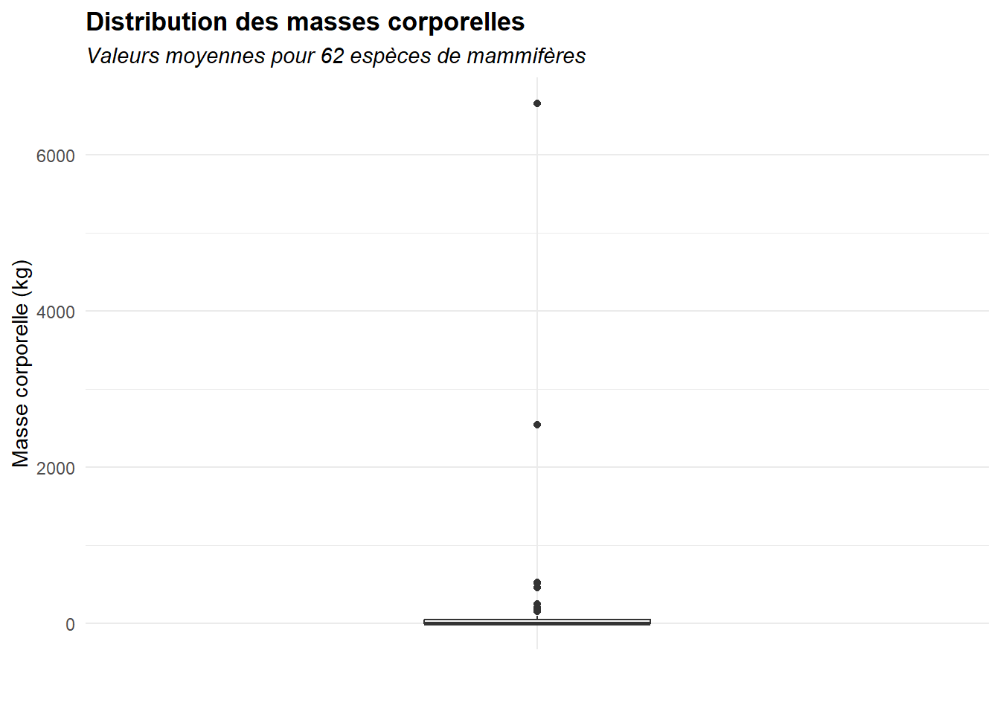
ggplot(mammals)+aes(x="",y=brain)+
geom_boxplot(width=0.3)+
theme_minimal()+
labs(x="",y="Masse cérébrale (g)",
title = "Distribution des masses cérébrales",
subtitle = "Valeurs moyennes pour 62 espèces de mammifères")+
theme(plot.title = element_text(face="bold",size=rel(1.2)),
plot.subtitle = element_text(face="italic",size=rel(0.8)))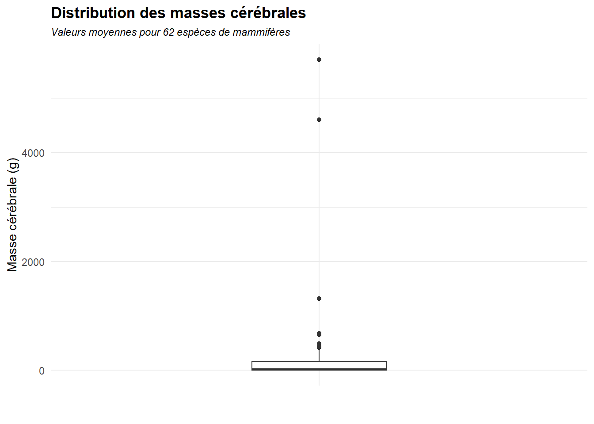
# Histogrammes
n_class <- ceiling(1 + 3.3*log10(nrow(mammals)))
ggplot(mammals)+aes(x=body)+
geom_histogram(bins = n_class,fill="skyblue",colour = "grey20")+
theme_minimal()+
labs(x="Masse corporelle (kg)",y="Effectif",
title = "Distribution des masses corporelles",
subtitle = "Valeurs moyennes pour 62 espèces de mammifères")+
theme(plot.title = element_text(face="bold",size=rel(1.2)),
plot.subtitle = element_text(face="italic",size=rel(0.8)))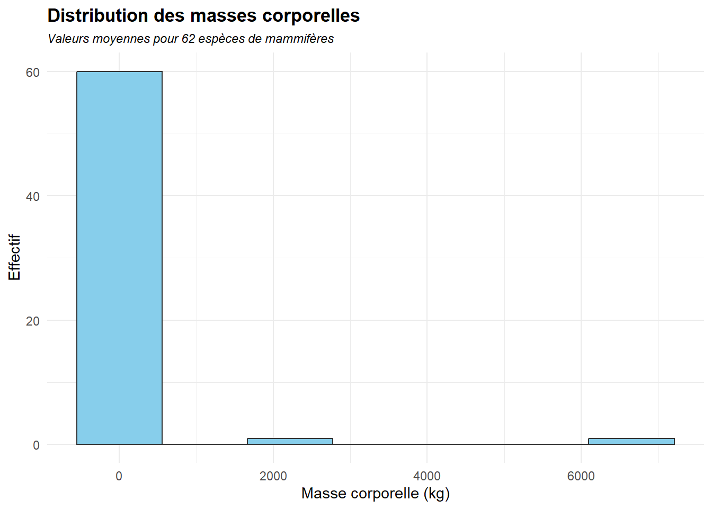
ggplot(mammals)+aes(x=brain)+
geom_histogram(bins = n_class,fill="skyblue",colour = "grey20")+
theme_minimal()+
labs(x="Masse cérébrale (g)",y="Effectif",
title = "Distribution des masses cérébrales",
subtitle = "Valeurs moyennes pour 62 espèces de mammifères")+
theme(plot.title = element_text(face="bold",size=rel(1.2)),
plot.subtitle = element_text(face="italic",size=rel(0.8)))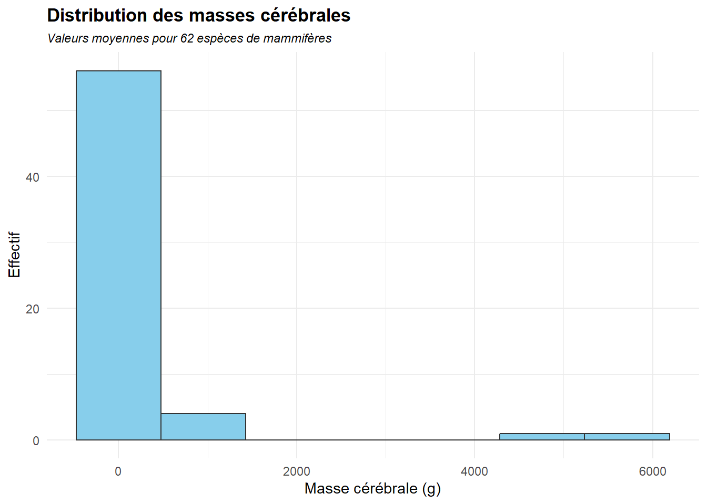
- Dessiner le nuage de points du jeu de données, où la masse corporelle est représentée en abscisses, et la masse cérébrale en ordonnées.
Voir la réponse
ggplot(mammals) + aes(x=body,y=brain)+
geom_point()+
theme_minimal()+
labs(x="Masse corporelle (kg)",
y="Masse cérébrale (g)",
title = "Masse cérébrale VS Masse corporelle",
subtitle = "Valeurs moyennes pour 62 espèces de mammifères")+
theme(plot.title = element_text(face="bold",size=rel(1.2)),
plot.subtitle = element_text(face="italic",size=rel(0.8)))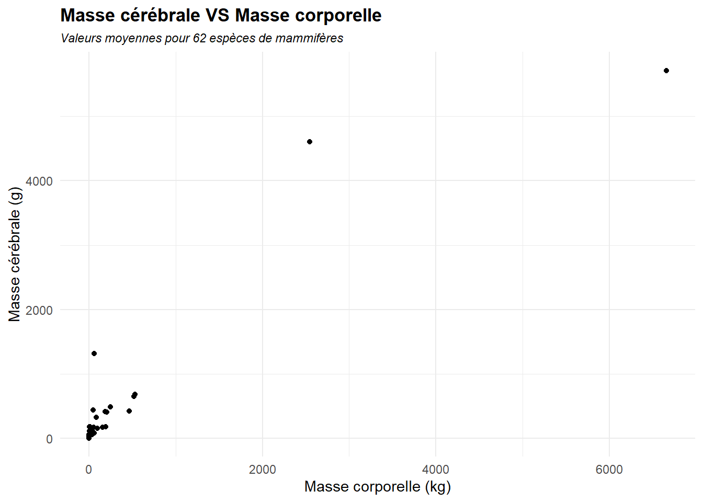
- Les deux variables semblent-elles linéairement corrélées ? Justifier.
Voir la réponse
Les deux variables sont clairement corrélées de façon positive.
cor.test(x=mammals$body,y=mammals$brain)
Pearson's product-moment correlation
data: mammals$body and mammals$brain
t = 20.278, df = 60, p-value < 2.2e-16
alternative hypothesis: true correlation is not equal to 0
95 percent confidence interval:
0.8926796 0.9599518
sample estimates:
cor
0.9341638 Cela ne se voit pas bien sur le graphique, car quelques valeurs extrêmes écrasent le nuage de points. Si on rrestreint aux plus petites valeurs, la corrélation devient légèrement plus claire.
ggplot(mammals) + aes(x=body,y=brain)+
geom_point()+
theme_minimal()+
labs(x="Masse corporelle (kg)",
y="Masse cérébrale (g)",
title = "Masse cérébrale VS Masse corporelle",
subtitle = "Valeurs moyennes pour 62 espèces de mammifères (valeurs extrêmes retirées)")+
xlim(c(0,10))+
ylim(c(0,100))+
theme(plot.title = element_text(face="bold",size=rel(1.2)),
plot.subtitle = element_text(face="italic",size=rel(0.8)))Warning: Removed 23 rows containing missing values or values outside the scale range
(`geom_point()`).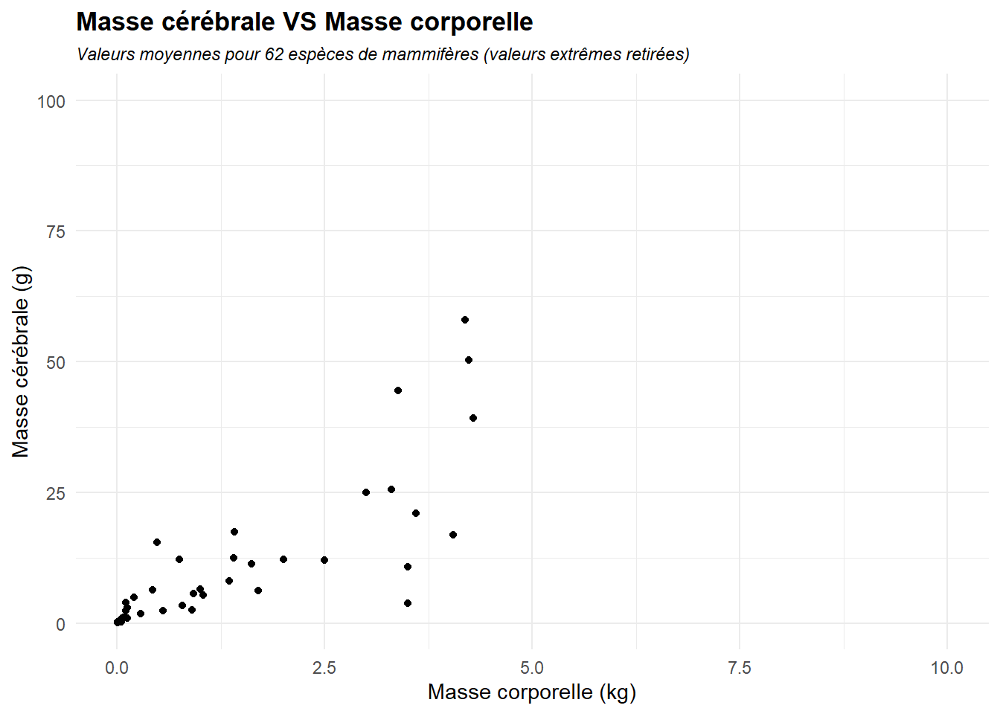
Sur le graphique précédent, on observe toutefois un “cône de dispersion” plutôt qu’une croissance linéaire de la masse cérébrale en fonction de la masse corporelle. En général, cela indique qu’une transformation logarithmique d’une, ou plusieurs variables, est nécessaire.
- A l’aide de la fonction
mutate(), importée avec le packagetidyverse, créer deux nouvelles variableslog_bodyetlog_brain, comprenant les logarithmes des deux quantités étudiées pour chaque individu.
Voir la réponse
mammals <- mammals %>%
mutate(log_body = log(body),
log_brain = log(brain))- Dessiner à nouveau le nuage de points représentant ces deux variables, ainsi que leur coefficient de corrélation. Celui-ci est-il significativement non nul ?
Voir la réponse
Le coefficiient de corrélation entre ces nouvelles variables est significativement non nul au seuil de 5% *(et même à un seuil bien inférieur, avec une p-value \(< 2.2\mathrm{e}^{-16}\)).
cor.test(x=mammals$log_body,y=mammals$log_brain)
Pearson's product-moment correlation
data: mammals$log_body and mammals$log_brain
t = 26.409, df = 60, p-value < 2.2e-16
alternative hypothesis: true correlation is not equal to 0
95 percent confidence interval:
0.9335522 0.9755352
sample estimates:
cor
0.9595748 ggplot(mammals) + aes(x=log_body,y=log_brain)+
geom_point()+
theme_minimal()+
labs(x="Log de la masse corporelle (en kg)",
y="Log de la masse cérébrale (en g)",
title = "Log de la masse cérébrale VS Log de la masse corporelle",
subtitle = "Valeurs moyennes pour 62 espèces de mammifères")+
theme(plot.title = element_text(face="bold",size=rel(1.2)),
plot.subtitle = element_text(face="italic",size=rel(0.8)))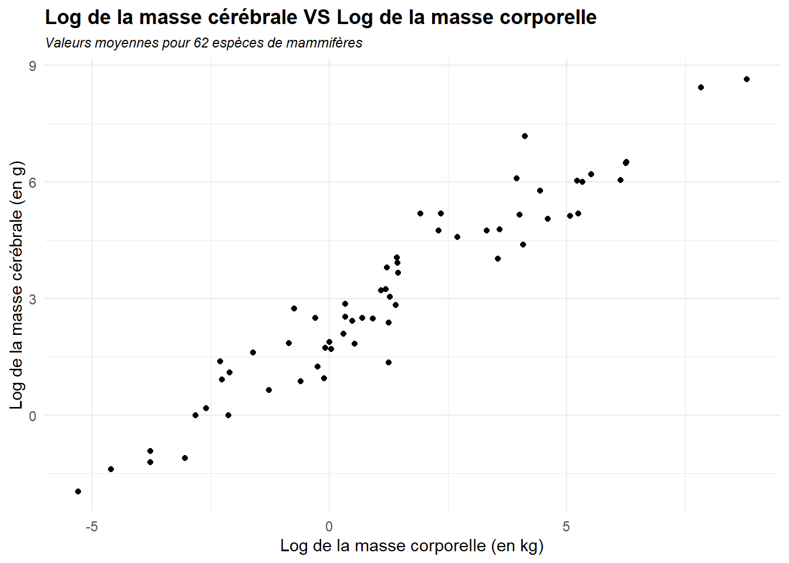
Le fait d’être passé en échelle logarithmique a naturellement rendu les valeurs extrêmes moins extrêmes, et un ajustement linéaire semble dorénavant plus adapté.
- Ajuster un modèle linéaire permettant d’expliquer la variable
log_brainà partir delog_body. Commenter.
Voir la réponse
mod_lm <- lm(data=mammals,formula = log_brain~log_body)
summary(mod_lm)
Call:
lm(formula = log_brain ~ log_body, data = mammals)
Residuals:
Min 1Q Median 3Q Max
-1.71550 -0.49228 -0.06162 0.43597 1.94829
Coefficients:
Estimate Std. Error t value Pr(>|t|)
(Intercept) 2.13479 0.09604 22.23 <2e-16 ***
log_body 0.75169 0.02846 26.41 <2e-16 ***
---
Signif. codes: 0 '***' 0.001 '**' 0.01 '*' 0.05 '.' 0.1 ' ' 1
Residual standard error: 0.6943 on 60 degrees of freedom
Multiple R-squared: 0.9208, Adjusted R-squared: 0.9195
F-statistic: 697.4 on 1 and 60 DF, p-value: < 2.2e-16Les paramètres estimés dans la régression sont significativement non nuls. D’autre part, le modèle explique environ 92% de la variance, ce qui témoigne d’un excellent ajustement.
- Représenter un intervalle de confiance au niveau 95% pour les prédictions de ce modèle sur un graphique.
Voir la réponse
# On effecue les prédictions
pred_lm <- predict(mod_lm,newdata = mammals,interval = "prediction")
# On ajoute ces prédictions, ainsi que les bornes de l'intervalle de confiance dans
# le dataframe d'origine
mammals <- mammals %>%
mutate(logfit = pred_lm[,1],
loglwr = pred_lm[,2],
logupr = pred_lm[,3])
# On affiche le graphique avec les échelles logarithmiques
ggplot(mammals) + aes(x=log_body,y=log_brain)+
geom_line(aes(y=logfit),colour="tomato",linetype = "dashed",linewidth = 0.8)+
geom_ribbon(aes(ymin = loglwr,ymax=logupr),fill="tomato",alpha=0.3)+
geom_point()+
theme_minimal()+
labs(x="Log de la masse corporelle (en kg)",
y="Log de la masse cérébrale (en g)",
title = "Log de la masse cérébrale VS Log de la masse corporelle",
subtitle = "Valeurs moyennes pour 62 espèces de mammifères, avec la prédiction par le modèle, et son intervalle de confiance à 95%")+
theme(plot.title = element_text(face="bold",size=rel(1.2)),
plot.subtitle = element_text(face="italic",size=rel(0.7)))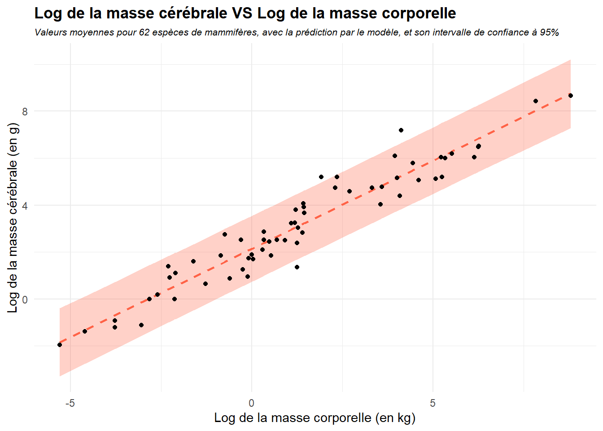
Si \(Y\) désigne la masse cérabrale et \(X\) la masse corporelle, on a ajusté le modèle \[\log(Y) = \beta_0 + \beta_1\times \log(X) + \varepsilon\] et donc \[Y = \exp \left( \beta_0 + \beta_1\times \log(X) + \varepsilon \right)\] On peut donc représenter nos prédictions dans les échelles originales.
mammals <- mammals %>%
mutate(fit = exp(logfit),
lwr = exp(loglwr),
upr = exp(logupr))
ggplot(mammals) + aes(x=body,y=brain)+
geom_line(aes(y=fit),colour="tomato",linetype = "dashed",linewidth = 0.8)+
geom_ribbon(aes(ymin = lwr,ymax=upr),fill="tomato",alpha=0.3)+
geom_point()+
theme_minimal()+
labs(x="Masse corporelle (en kg)",
y="Masse cérébrale (en g)",
title = "Masse cérébrale VS Masse corporelle",
subtitle = "Valeurs moyennes pour 62 espèces de mammifères, avec la prédiction par le modèle, et son intervalle de confiance à 95%")+
theme(plot.title = element_text(face="bold",size=rel(1.2)),
plot.subtitle = element_text(face="italic",size=rel(0.7)))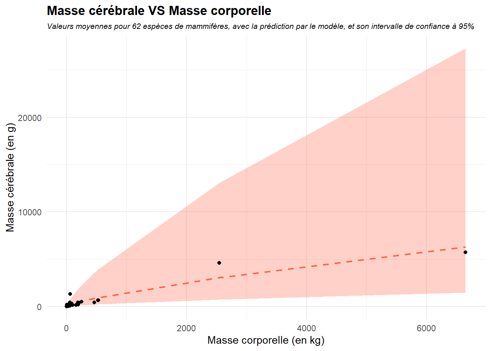
- Estimer avec le modèle proposé la masse cérébrale pour les individus dont la masse corporelle est définie ci-dessous, et comparer avec les vraies valeurs.
| Espèce | body | brain |
|---|---|---|
| Chien domestique | 19.7 | 86.5 |
| Mangouste rayée | 1.5 | 14.3 |
| Furet | 0.8 | 5.4 |
| Dauphin commun | 75.0 | 783.0 |
| Grand dauphin | 186.0 | 1559.0 |
| Orque | 2409.0 | 6215.0 |
Voir la réponse
new_mammals <- data.frame(
species = c("Chien domestique","Mangouste rayée", "Furet",
"Dauphin commun", "Grand dauphin", "Orque"),
body = c(19.7,1.5,0.8,75, 186, 2409),
brain = c(86.5,14.3,5.4,783, 1559, 6215)
) %>%
mutate(log_body = log(body),
log_brain = log(brain))
# On regarde les prédictions
exp(predict(mod_lm,newdata = new_mammals,interval="prediction")) fit lwr upr
1 79.461910 19.534931 323.22587
2 11.468121 2.825299 46.55005
3 7.149589 1.758192 29.07339
4 217.062162 52.983931 889.25041
5 429.623377 104.121884 1772.69407
6 2945.819303 692.864166 12524.60697Si les prédictions faites par le modèle sont assez proches des données réelles pour le chien domestique, la mangouste rayée et le furet, ce n’est pas le cas pour les mammifères marins.
Toutefois, les vraies valeurs de la masse cérébrale sont toujours contenues dans l’intervalle de confiance calculé.
Exercice 2
On considère maintenant le jeu de données possum disponible ici .
Celui-ci contient les données de 104 phalangers à queue en brosse, des marsupiaux capturés sur sept sites australiens, avec 3 mensurations corporelles ainsi que le sexe. Les observations proviennent d’une étude morphologique publiée par Lindenmayer et al. (1995).
Les variables considérées sont :
totlngth la longueur totale en cm, hdlngth la longueur de la tête en mm, chest le périmètre thoracique en cm, belly le périmètre abdominal en cm, *sex le sexe de l’individu.
On cherche à répondre à la question suivante :
Comment la longueur totale de l’animal varie-t-elle avec la longueur de sa tête, son périmètre thoracique, son périmètre abdominal et son sexe ?
- Importer les données en R, et en dresser un rapide résumé statistique.
Voir la réponse
load("possum.Rdata")
summary(possum) totlngth hdlngth chest sex belly
Min. :75.00 Min. : 82.50 Min. :22.0 f:43 Min. :25.00
1st Qu.:84.00 1st Qu.: 90.67 1st Qu.:25.5 m:61 1st Qu.:31.00
Median :88.00 Median : 92.80 Median :27.0 Median :32.50
Mean :87.09 Mean : 92.60 Mean :27.0 Mean :32.59
3rd Qu.:90.00 3rd Qu.: 94.72 3rd Qu.:28.0 3rd Qu.:34.12
Max. :96.50 Max. :103.10 Max. :32.0 Max. :40.00 - Représenter les distributions des variables quantitatives par des boxplots, en faisant la distinction par sexe.
Voir la réponse
On va d’abord créer un nouveau jeu de données nous permettant de mieux représenter les données.
possum_plot <- possum %>%
pivot_longer(cols = c(1,2,3,5), # La fonction pivot_longer() permet de regrouper
names_to = "Variable", # les colonnes sélectionnées en une seule.
values_to = "Valeur")
library(RColorBrewer) # package à installer pour de plus jolies couleurs
ggplot(possum_plot) + aes(x=Variable,y=Valeur,fill=sex)+
geom_boxplot(width=0.4)+
scale_fill_brewer(palette = "Set2",
name="Sexe",
labels = c(f = "Femelle", # Pour une meilleure
m = "Mâle")) + # annotation dans la légende
theme_minimal()+
labs(x="Variable",y="Valeur",
title = "Distribution des variables en fonction du sexe",
subtitle = "Valeurs observées sur 104 opposums.")+
theme(plot.title = element_text(face="bold",size=rel(1.2)),
plot.subtitle = element_text(face="italic",size=rel(0.8)))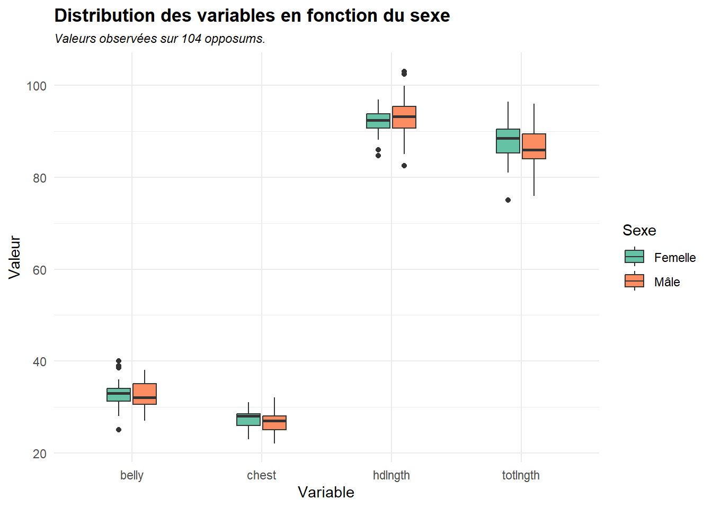
On remarque que les variables sont globalement plus dispersées chez les mâles.
- A l’aide de la fonction
ggpairs()du packageGGally, représenter les nuages de points des opossums par paire de variables.
Voir la réponse
library(GGally)
ggpairs(possum)+
theme_minimal()+
labs(title = "Nuages de points des variables")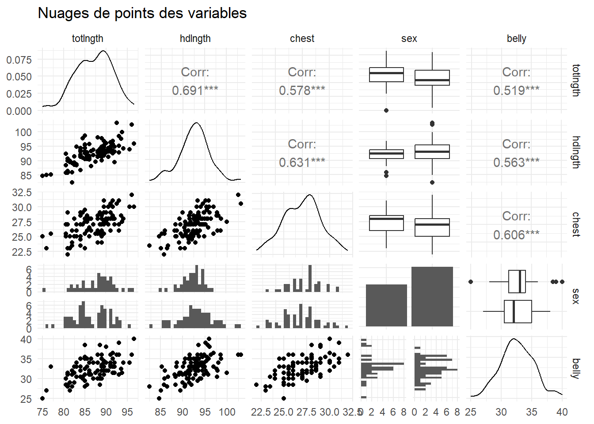
La forme des nuages de points, ainsi que la corrélation significativement non nulle entre les variables, semblent indiquer qu’un modèle linéaire serait adapté afin de répondre à la question initiale.
Cette corrélation entre les variables explicatives peut aussi poser un problème : les estimations pourraient être moins précises et les prédictions plus instables.
On souhaite ajuster un modèle linéaire à ces données, afin d’expliquer la longueur totale de l’animal. Toutefois, la variable sex est qualitative (c’est un facteur à deux modalités).
La régression linéaire peut prendre en compte cette possibilité.
- On choisit une modalité de référence : ici sex = f.
- On transforme la variable en indicatrice : elle vaut 1 si sex = m, 0 sinon.
- On associe un coefficient à cette indicatrice.
Le modèle porposé dans notre cas est alors, pour chaque individu \(i\) \[\mathrm{totlngth}_i = \beta_0 + \beta_1 \mathrm{hdlngth}_i + \beta_2 \mathrm{chest}_i + \beta_3 \mathrm{belly}_i + \beta_4 \mathbb{1}_{\mathrm{sex_i = m}}+ \varepsilon_i\]
où les \(\varepsilon_i\) sont i.i.d. de loi \(\mathcal{N}(0,\sigma^2)\).
Le coefficient \(\beta_4\) correspond en fait à la différence de taille moyenne entre les individus mâles et les individus femelles, toutes les autres variables étant égales par ailleurs.
- Ajuster le modèle linéaire proposer, et le commenter.
Voir la réponse
lm_possum <- lm(data = possum,formula = totlngth ~.)
summary(lm_possum)
Call:
lm(formula = totlngth ~ ., data = possum)
Residuals:
Min 1Q Median 3Q Max
-6.3704 -2.0308 0.1531 1.9878 7.9406
Coefficients:
Estimate Std. Error t value Pr(>|t|)
(Intercept) 11.4855 7.6612 1.499 0.1370
hdlngth 0.6940 0.1133 6.128 1.82e-08 ***
chest 0.2649 0.2030 1.305 0.1949
sexm -1.7000 0.6126 -2.775 0.0066 **
belly 0.1589 0.1382 1.150 0.2528
---
Signif. codes: 0 '***' 0.001 '**' 0.01 '*' 0.05 '.' 0.1 ' ' 1
Residual standard error: 2.935 on 99 degrees of freedom
Multiple R-squared: 0.5544, Adjusted R-squared: 0.5364
F-statistic: 30.79 on 4 and 99 DF, p-value: < 2.2e-16Le modèle explique envrion 55% de la variance de la variable réponse (longueur totale). Si le sexe et la longueur de la tête semblent être des variables explicatives, cela ne semble pas être le cas du périmètre thoracique et du périmètre abdominal.
Ici, la constante \(\beta_0\) n’est pas significativement non nulle non plus.
- Ajuster un modèle restreint ne considérant que le sexe et la longueur de la tête comme variables explicatives, et en effectuer un résumé.
Voir la réponse
lm_possum_restreint <- lm(data = possum, formula = totlngth ~ hdlngth + sex)
summary(lm_possum_restreint)
Call:
lm(formula = totlngth ~ hdlngth + sex, data = possum)
Residuals:
Min 1Q Median 3Q Max
-6.4688 -2.0653 0.5827 1.7772 8.4470
Coefficients:
Estimate Std. Error t value Pr(>|t|)
(Intercept) 8.26102 7.61487 1.085 0.280569
hdlngth 0.86432 0.08249 10.478 < 2e-16 ***
sexm -2.06458 0.59568 -3.466 0.000777 ***
---
Signif. codes: 0 '***' 0.001 '**' 0.01 '*' 0.05 '.' 0.1 ' ' 1
Residual standard error: 2.974 on 101 degrees of freedom
Multiple R-squared: 0.5331, Adjusted R-squared: 0.5239
F-statistic: 57.67 on 2 and 101 DF, p-value: < 2.2e-16Le modèle explique cette fois-ci 53% de la variance. La décroissance du coefficient \(R^2\) est infime.
- Réaliser le test \[H_0 : \beta_2 = \beta_3 =0 \quad \text{contre} \quad H_1 : \beta_2 \neq 0 \ \text{ou} \ \beta_3 \neq 0.\]
et conclure sur le problème énoncé en début d’exercice.
Voir la réponse
On va effectuer un test de Fisher.
anova(lm_possum,lm_possum_restreint)Analysis of Variance Table
Model 1: totlngth ~ hdlngth + chest + sex + belly
Model 2: totlngth ~ hdlngth + sex
Res.Df RSS Df Sum of Sq F Pr(>F)
1 99 852.77
2 101 893.49 -2 -40.719 2.3635 0.09938 .
---
Signif. codes: 0 '***' 0.001 '**' 0.01 '*' 0.05 '.' 0.1 ' ' 1Références
Allison, T., et D. V. Cicchetti. 1976. « Sleep in mammals: ecological and constitutional correlates ». Science 194 (4266): 732‑34. https://doi.org/10.1126/science.982039.
Lindenmayer, D. B., K. L. Viggers, R. B. Cunningham, et C. F. Donnelly. 1995. « Morphological variation among populations of the mountain brushtail possum, Trichosurus caninus Ogilby (Phalangeridae: Marsupialia) ». Australian Journal of Zoology 43 (5): 449‑58. https://doi.org/10.1071/ZO9950449.